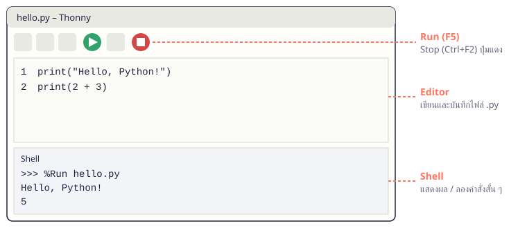

เมื่อจบบทนี้ นิสิตจะทำได้เขียนโปรแกรมใน editor บันทึกเป็นไฟล์ .py รันดูผล และแก้ error ง่าย ๆ จากข้อความที่ Python แจ้ง
1.1 Python ทำงานอย่างไร
เราเขียนคำสั่งเป็นข้อความในไฟล์นามสกุล .py แล้วโปรแกรมชื่อ interpreter จะอ่านและทำตามคำสั่งทีละบรรทัด จากบนลงล่าง
topic_1_1.py
print("Hello, Python!")
print("I am ready to learn.")
print(2 + 3)
ผลลัพธ์Hello, Python!
I am ready to learn.
5
จำง่าย ๆprint() คือคำสั่งแสดงผล ข้อความต้องอยู่ในเครื่องหมายคำพูด แต่การคำนวณอย่าง 2 + 3 ไม่ต้องมี
1.2 เครื่องมือที่ใช้: Thonny
Thonny เป็น IDE ที่เหมาะกับผู้เริ่มต้น ติดตั้งครั้งเดียวได้ Python มาด้วย หน้าจอมี 2 ส่วนหลัก: Editor ด้านบนสำหรับเขียนและบันทึกไฟล์ และ Shell ด้านล่างสำหรับแสดงผล

หน้าจอ Thonny: ปุ่ม Run สีเขียวด้านบน, Editor สำหรับเขียนไฟล์ .py และ Shell ด้านล่างแสดงผลลัพธ์จำง่าย ๆดาวน์โหลดได้ที่ thonny.org เลือกเวอร์ชันที่มี Python มาให้ แล้วกด Next จนจบ
1.3 Shell กับไฟล์ .py ต่างกันอย่างไร
Shell เหมาะกับการลองคำสั่งสั้น ๆ พิมพ์แล้วเห็นผลทันที แต่ปิดโปรแกรมแล้วคำสั่งจะหายไป ส่วนไฟล์ .py เก็บโปรแกรมไว้รันซ้ำ แก้ไข และส่งงานได้
1.4 comment และการเยื้องบรรทัด
ข้อความหลัง # คือ comment ใช้อธิบายโค้ดให้คนอ่าน Python จะข้ามไป ส่วนการเยื้องบรรทัด (indent) มีความหมายใน Python ห้ามเว้นหน้าบรรทัดถ้าไม่จำเป็น และเมื่อต้องเยื้องให้ใช้ 4 ช่องเสมอ
topic_1_4.py
# โปรแกรมแปลงนาทีเป็นชั่วโมง
total_minutes = 135
hours = total_minutes // 60 # หารแบบปัดเศษทิ้ง
minutes = total_minutes % 60 # เศษที่เหลือ
print(hours, "ชั่วโมง", minutes, "นาที")
จำง่าย ๆตั้งชื่อไฟล์เป็นภาษาอังกฤษ ไม่มีเว้นวรรค และอย่าตั้งชื่อซ้ำกับโมดูลของ Python เช่น random.py หรือ math.py
1.5 อ่าน error ให้เป็น
เมื่อโปรแกรมผิด Python จะแสดงข้อความสีแดง ให้อ่านบรรทัดล่างสุดก่อน จะบอกชนิด error และใกล้ ๆ กันจะบอกเลขบรรทัด (line 3) ให้ไปแก้ที่บรรทัดนั้น
จำง่าย ๆแก้ทีละจุดแล้วรันใหม่ ไม่ต้องลบทั้งโปรแกรมเขียนใหม่
ตัวอย่างโปรแกรม
ตัวอย่าง 1.1โปรแกรมแรก
สร้างไฟล์ hello.py แสดงข้อความและผลคำนวณ
example_1_1.py
# hello.py
print("สวัสดี Python")
print("วันนี้เรียนบทที่ 1")
print("1 ชั่วโมงมี", 60 * 60, "วินาที")
ผลลัพธ์สวัสดี Python
วันนี้เรียนบทที่ 1
1 ชั่วโมงมี 3600 วินาที
อธิบาย- กด
Ctrl + N เปิดไฟล์ใหม่ พิมพ์โค้ด แล้วกด Ctrl + S บันทึกเป็น hello.py - กด
F5 ผลลัพธ์จะแสดงใน Shell ตามลำดับบรรทัด print() แสดงหลายค่าได้โดยคั่นด้วย , และ Python คำนวณ 60 * 60 ก่อนแสดงผล
ตัวอย่าง 1.2ป้ายชื่อวิชา
ใช้ comment อธิบายส่วนต่าง ๆ และใช้ print() จัดหน้าตาผลลัพธ์
example_1_2.py
# ข้อมูลรายวิชา
course = "Python Programming"
credits = 3
# แสดงผล
print("=" * 30)
print("วิชา:", course)
print("หน่วยกิต:", credits)
print("=" * 30)
ผลลัพธ์==============================
วิชา: Python Programming
หน่วยกิต: 3
==============================
อธิบาย- บรรทัดที่ขึ้นต้นด้วย
# ไม่ถูกรัน มีไว้ให้คนอ่าน "=" * 30 สร้างเส้นจากเครื่องหมาย = 30 ตัว- เก็บข้อมูลไว้ด้านบนทำให้แก้ค่าได้ที่เดียว (เรื่องตัวแปรจะเรียนละเอียดในบทที่ 2)
แบบฝึกหัดท้ายบท
เรียงจากง่ายไปยาก ลองเขียนเองให้ได้ผลลัพธ์ตรงตัวอย่างก่อน แล้วค่อยเปิดเฉลย
ระดับความยาก: ง่าย ปานกลาง ท้าทาย
ข้อ 1.1Hello, Pythonง่าย
สร้างไฟล์ hello.py ใน Thonny ให้แสดงข้อความ 2 บรรทัด
เข้าใจโจทย์- โจทย์ให้
- ข้อความ
Hello, Python! และ My name is Hobi. - ต้องหา
- ข้อความ 2 บรรทัดตามลำดับใน Shell
วิธีคิดCtrl + N เปิดไฟล์ใหม่- เขียน
print() 2 บรรทัด - บันทึกเป็น
hello.py แล้วกด F5
ตัวอย่างผลลัพธ์Hello, Python!
My name is Hobi.
ข้อ 1.2แนะนำตัว 3 บรรทัดง่าย
แสดงชื่อ สาขา และชั้นปีของตัวเอง บรรทัดละ 1 ข้อมูล
เข้าใจโจทย์- โจทย์ให้
- ข้อมูลของตัวเอง (ตัวอย่าง: JayB, Computer Science, ปี 1)
- ต้องหา
- 3 บรรทัด ขึ้นต้นด้วย
Name:, Major:, Year:
วิธีคิด- เขียน
print() 3 คำสั่ง - ชั้นปีเป็นตัวเลข ไม่ต้องมีเครื่องหมายคำพูดก็ได้
- รันแล้วตรวจลำดับบรรทัด
ตัวอย่างผลลัพธ์Name: JayB
Major: Computer Science
Year: 1
ข้อ 1.3ทายผลก่อนรันปานกลาง
ก่อนรันโค้ด print("5 + 7") และ print(5 + 7) ให้เขียนคำตอบที่คิดว่าจะได้ แล้วรันเพื่อตรวจ
เข้าใจโจทย์- โจทย์ให้
- โค้ด 2 บรรทัด ต่างกันแค่เครื่องหมายคำพูด
- ต้องหา
- อธิบายได้ว่าทำไมผลต่างกัน
วิธีคิด- ทายผลแต่ละบรรทัดก่อน
- รันแล้วเทียบกับที่ทาย
- สังเกตว่าเครื่องหมายคำพูดเปลี่ยนความหมายอย่างไร
ข้อ 1.4แก้ SyntaxErrorปานกลาง
โค้ด print("Open the file) รันแล้วเกิด error ให้หาจุดผิดแล้วแก้
เข้าใจโจทย์- โจทย์ให้
- โค้ดที่ขาดเครื่องหมายคำพูดปิด
- ต้องหา
- แสดง
Open the file ได้ไม่มี error
วิธีคิด- รันแล้วอ่านบรรทัดล่างสุด:
SyntaxError: unterminated string literal - ดูเลขบรรทัดที่ error แจ้ง
- เติม
" ปิดข้อความก่อน )
ตัวอย่างผลลัพธ์Open the file
ข้อ 1.5แก้ NameErrorปานกลาง
โค้ด prnt("Welcome") และ print(Thonny) มี error 2 จุด ให้แก้ทั้งสองจุด
เข้าใจโจทย์- โจทย์ให้
- โค้ด 2 บรรทัดที่มีชื่อผิด
- ต้องหา
- แสดง
Welcome และ Thonny
วิธีคิด- แก้ทีละบรรทัด รันใหม่ทุกครั้ง
- บรรทัดแรก: สะกด
print ผิด - บรรทัดสอง:
Thonny เป็นข้อความ ต้องใส่เครื่องหมายคำพูด
ตัวอย่างผลลัพธ์Welcome
Thonny
ข้อ 1.6เครื่องคิดเลขค่าเทอมท้าทาย
ค่าหน่วยกิตละ 1,200 บาท ลงเรียน 18 หน่วยกิต และค่าบำรุง 3,500 บาท ให้แสดงยอดค่าเทอมรวม พร้อม comment อธิบายสูตร
เข้าใจโจทย์- โจทย์ให้
- ค่าหน่วยกิต 1200, จำนวน 18 หน่วยกิต, ค่าบำรุง 3500
- ต้องหา
ค่าเทอมรวม 25100 บาท
วิธีคิด- เขียน comment บอกว่าโปรแกรมทำอะไร
- คำนวณ
1200 * 18 + 3500 ใน print() - ลองทดในใจก่อนว่าได้เท่าไร แล้วเทียบผล
ตัวอย่างผลลัพธ์ค่าเทอมรวม 25100 บาท
📝 เก็บคะแนนท้ายบท มีคะแนน
🔐 Login ด้วยอีเมลมหาวิทยาลัย @msu.ac.th เท่านั้น
คำถามท้ายบทที่ 1 (Quiz) · 5 คะแนน · ส่งได้ครั้งเดียว — ทำตามลำดับ 2 ขั้น
🙋
1เช็คชื่อก่อนสอบ
เช็คชื่อเข้าเรียนในคาบ — ไม่ได้เช็คชื่อ = ไม่ได้คะแนนคำถามท้ายบทนี้
เช็คชื่อ ↗
📝
2ทำ Quiz บทที่ 1 (Google Form)
ต้องใช้ รหัส Quiz ที่อาจารย์บอกในห้องเรียน จึงจะทำส่วนถัดไปได้
เปิด Quiz บทที่ 1 ↗
แบบฝึกหัดท้ายบทด้านบนไม่เก็บคะแนน · ดูกติกาคะแนนทั้งหมดที่ ภาคผนวก A · เกณฑ์คะแนนและคะแนนนิสิต